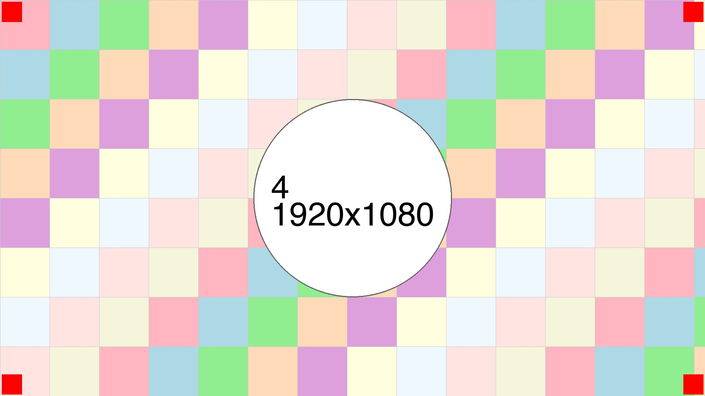

横長画像の説明
この横長画像は、広い視野と奥行きのある構図でデザインの美しさを表現しています。横長の特性を活かし、左右に広がるダイナミックなレイアウトを実現しています。横長画像は、風景写真やバナー画像、ヘッダー画像など、様々な用途で使用される汎用性の高いフォーマットです。このテンプレートでは、横長の特性を最大限に活かした表示を提供します。モダンなデザイン感覚を表現し、雑誌やカタログ、ポートフォリオなど、様々な用途に応用できる汎用性の高いデザインとなっています。シンプルでありながら力強い印象を与えるデザインアプローチです。このレイアウトは、読者の注意を効果的に引きつけ、視覚的な焦点を生み出します。適切な行間と文字サイズにより、長時間の読書でも疲れにくい構成となっています。横長フォーマットの最大の利点は、ストーリーテリングの力にある。一つの画像の中に、時間の流れや空間の広がりを表現することができる。この特性を活かし、読者に豊かな体験を提供する。デザインの本質は、不必要な要素を削ぎ落とすことにある。シンプルな形の中に、深い意味と美しさを見出すことができたとき、真のデザインが完成する。現代のデザインは、機能性と美学のバランスを追求する。過度な装飾は排除し、必要最小限の要素で最大の効果を生み出すことを目指している。このアプローチは、ユーザーにとって分かりやすく、使いやすいインターフェースを提供する。デザインは見た目だけでなく、体験全体を向上させるものであるべきだ。画像とテキストの配置バランスは、デザインの成功を左右する重要な要素である。横長の画像は、読者の視線を自然に誘導し、ストーリーを語る力を持っている。このテンプレートは、その特性を最大限に活かし、美しく機能的なレイアウトを実現している。レイアウトの美しさは、要素の配置だけでなく、余白の使い方にもある。適切な余白は、コンテンツを際立たせ、読みやすさを向上させる。このテンプレートでは、余白を効果的に活用し、洗練されたデザインを実現している。